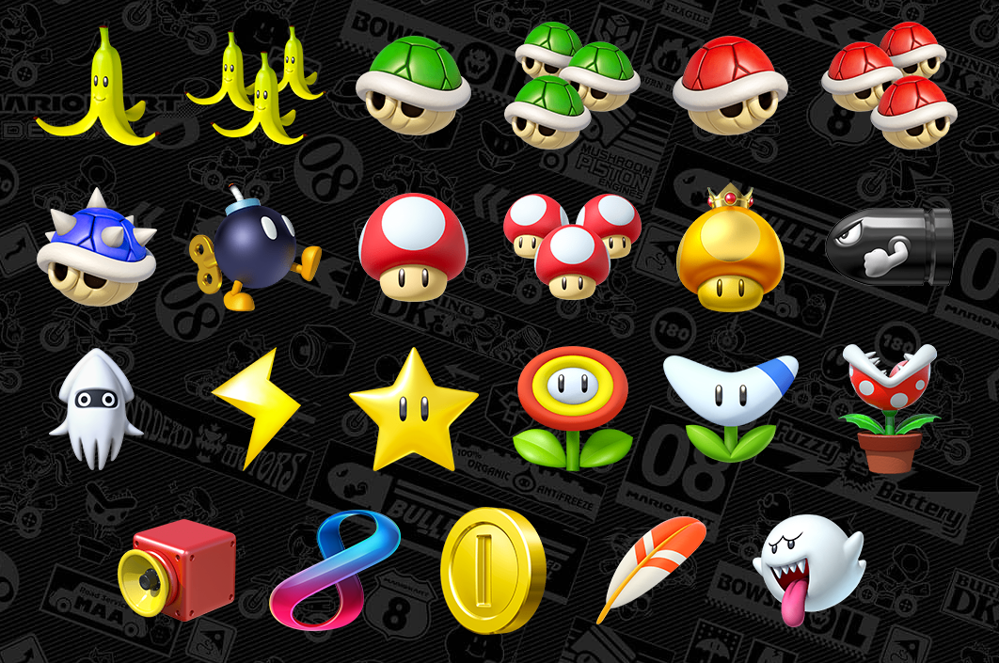

Nuevos objetos

Saca ventaja en la competencia con 12 poderosos y nuevos objetos. ¡Y ahora podrás llevar dos objetos a la vez!
- Bill bala: Te convierte durante un tiempo en un Bill bala que se lanzará automáticamente hacia la meta. Hará volar a cualquier vehículo que se interponga en su camino.
- Blooper: Lanza tinta a todos los vehículos que vayan adelante de ti y dificulta la visión de sus pilotos durante un tiempo.
- Rayo: Hace dar vueltas sin control a todos tus oponentes. También los hace perder sus objetos y les reduce su tamaño y velocidad durante cierto periodo de tiempo.
- Superestrella: Te vuelve invencible durante un tiempo y aumenta tu velocidad. Los vehículos que choquen contigo saldrán volando por los aires.
- Flor de fuego: Te permite lanzar bolas de fuego durante cierto periodo de tiempo al oprimir [L]. Si alcanzas a algún vehículo, este dará vueltas sin control.
- Flor bumerán: Puedes lanzar el bumerán tres veces. Hará dar vueltas sin control a cualquier vehículo que alcance.
- Planta piraña: Se coloca delante de tu vehículo durante un tiempo. Cada vez que se lance a dar una mordida, te proporcionará un breve acelerón.
- Superclaxon: Un pitido a todo volumen que lanza por los aires a los vehículos y objetos que estén cerca.
- Ocho loco: Ocho objetos diferentes que giran alrededor de tu vehículo. Oprime [L] para usar el que esté justo enfrente del vehículo.
- Moneda: Te da dos monedas. Mientras más monedas tengas, mayor será la velocidad de tu vehículo.
- Pluma: Te permite dar un salto para evitar caparazones o plátanos. Golpea a un rival durante un salto para robarle un globo.
- Bú: Tu vehículo se vuelve fantasmal para que puedas atravesar caparazones y plátanos sin recibir daño. También es posible que le robes un objeto a uno de tus rivales.